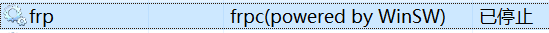
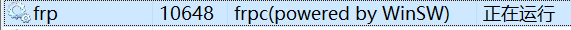

使用 WinSW 设置任意程序开机自启动
背景
在使用Windows系统时，会遇到希望有些软件（比如软件A）能够在开机后自动运行的情况，往往可惜的是软件A并不具备配置开机自启的功能。
我曾经使用过两种方法来实现这样的功能：
写一个启动软件A的start_program_A.bat文件，然后将这个bat文件添加到Windows的启动目录C:\ProgramData\Microsoft\Windows\Start Menu\Programs\StartUp这个目录下。但是这个方法有个问题是，在开机后有些软件会需要UAC权限，后来有找到一个软件UACWhitelistTool，先用其创建一个不需要UAC权限的软件A的快捷方式，然后在写一个启动这个快捷方式的start_program_A_ink.bat文件，然后再将其添加到Windows的启动目录下。总的来说还是有点麻烦的。
二、Windows计划任务
WinSW(Windows Service Wrapper)的使用
后来发现一个更容易的方式，就是借助WinSW这个软件。
根据其GitHub上的介绍，WinSW能够将任意软件注册成一个Windows服务。
下载WinSW
在该项目GitHub Releases下载WinSW-x64.exe并重命名成winsw.exe方便后续使用。
编写配置文件winsw.xml
配置格式模板：
<service>
<id>jenkins</id>
<name>Jenkins</name>
<description>This service runs Jenkins continuous integration system.</description>
<env name="JENKINS_HOME" value="%BASE%"/>
<executable>java</executable>
<arguments>-Xrs -Xmx256m -jar "%BASE%\jenkins.war" --httpPort=8080</arguments>
<log mode="roll"></log>
</service>我是希望开机自启frpc，使得我的电脑在开机后连上自建frps实现内网穿透，配置如下：
<service>
<id>frp</id>
<name>frpc(powered by WinSW)</name>
<description>frp remote control</description>
<executable>frpc</executable>
<arguments>-c frpc.ini</arguments>
<logmode>reset</logmode>
</service>注册为服务
先将需要开机启动的软件、winsw.exe和winsw.xml文件放在一个文件目录下，然后在目录处打开Windows PowerShell运行如下命令进行安装
./winsw.exe install
然后重启电脑，该服务就会自行启动，也可以按照后面的命令手动启动该服务

其他常用命令
立即启动
./winsw.exe start停止
./winsw.exe stop卸载
./winsw.exe uninstall参考
WinSW项目GitHub地址
用winsw让任何Windows程序都能运行为服务
WinSW(Windows service wrapper)开机自启动nginx配置